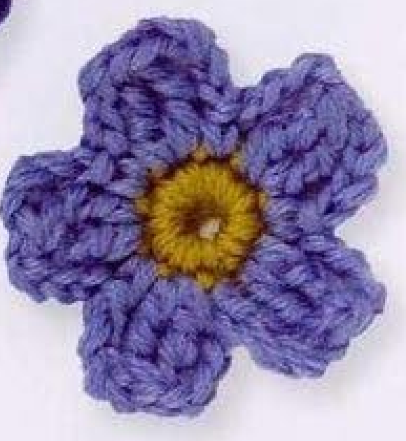
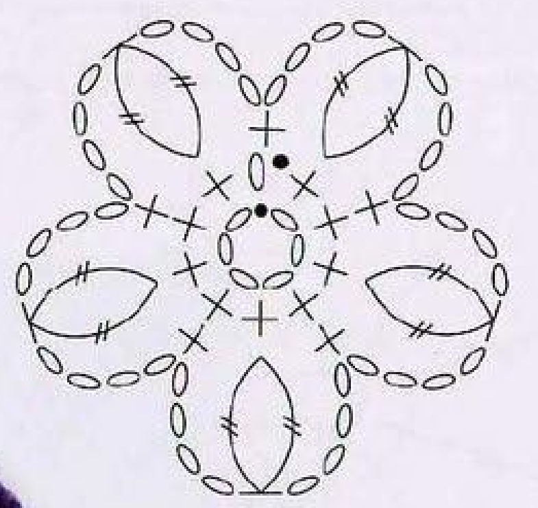
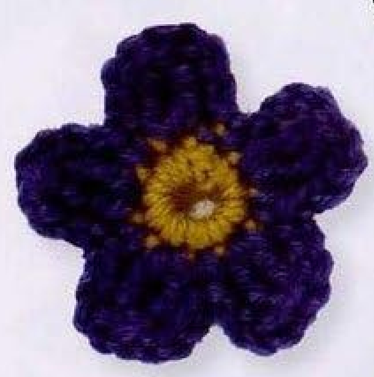
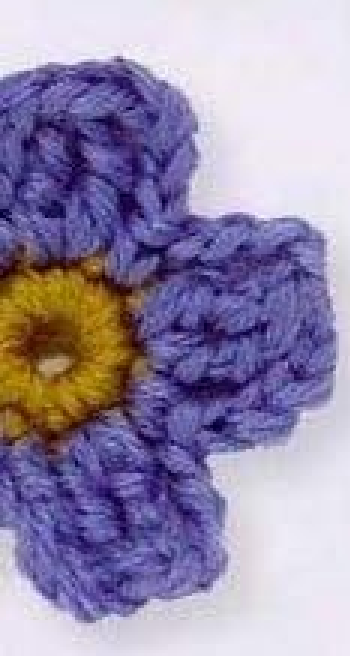
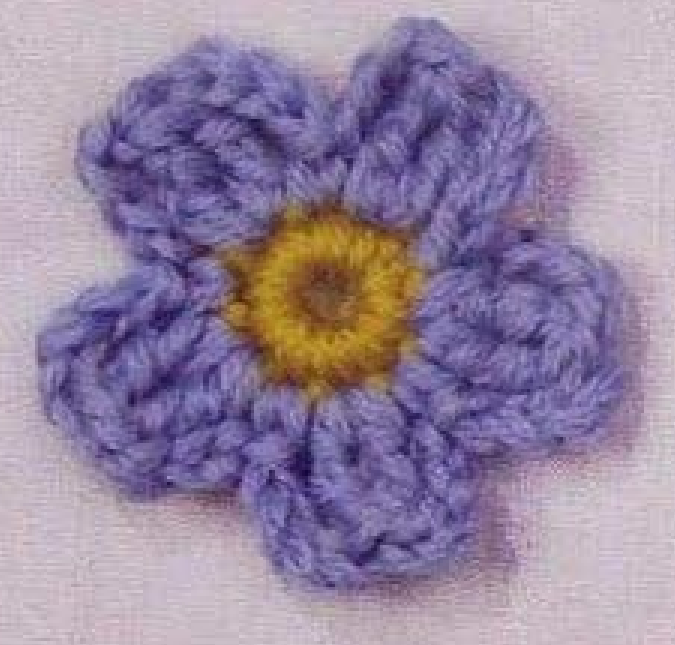
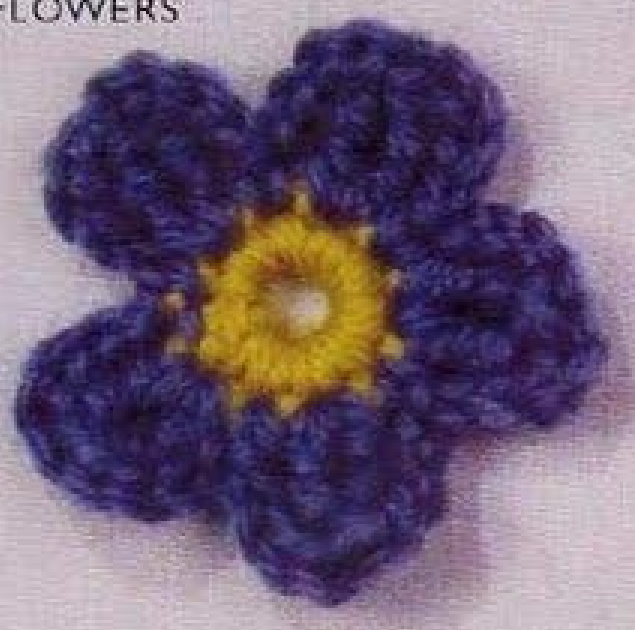

A crochet Meconopsis has five rounded blue petals around a small yellow ring center. Two tall stitches closed together form each petal body, while chain edges and short anchors define the outline. This guide follows pattern 50 in Lesley Stanfield’s 100 Flowers to Knit & Crochet, retaining its foundation, two rounds, five repeats, and invisible finish, with instructions explained in US terms.

Key Takeaways
- Use DK wool in yellow A and blue B.
- Begin with a six-chain joined ring.
- The yellow round has ten counted positions: an opening chain and nine sc.
- Each blue petal uses a two-stitch US treble cluster in one center position.
- Five repeats use the ten positions in alternating cluster and single-crochet placements.
CROCHET MECONOPSIS FLOWER PATTERN
Project: One five-petal blue wool flower with a yellow center. The source recipe is preserved below in US terms. Measurements, gauge, hook size, and yardage are not supplied; material and handling advice outside the recipe is additional practical guidance.
| Skill level | Not specified. Practical guidance: comfortable chain, single crochet, and tall-stitch cluster skills are useful. |
|---|---|
| Base size | One five-petal flower. Finished diameter and height are not specified. |
| Yarn | DK wool: yellow A and blue B. |
| Quantity | Not specified. Keep both colors available for the center-round closing join. |
| Hook and gauge | Not specified. Choose a suitable hook for your wool and evaluate a sample. |
| Notions | Scissors, a blunt yarn needle, and an optional removable marker. |
| US abbreviations | ch = chain; sc = single crochet; sl st = slip stitch; tr = treble crochet; cluster = partial stitches completed together in one base position. UK dc = US sc; UK dtr = US tr. |
| Foundation | With yellow A, ch 6. Join to the first chain with a slip stitch to form a ring. |
| Round 1 (RS) | Ch 1, work 9 sc into the ring, then using blue B sl st into the starting ch 1. Count 10 positions including the starting chain. |
| Round 2 | Continue with blue B. Repeat ch 4, a 2-stitch tr cluster in the next center position, ch 4, sc in the next center position five times. The starting chain supplies the final center position as the repeat returns to the beginning. End with a slip stitch into the starting ch 1 of Round 1. |
| Finishing | Fasten off invisibly, secure the ends on the back, and arrange the five petals without tightening the chain edges. |
Understand the Alternating Petal Placements
The yellow center establishes ten positions around the ring. Each petal repeat uses two: one for a tall cluster and the next for a short single-crochet anchor. Five repeats therefore fit the ten-position center. This simple relationship is a useful check whenever a petal is missing or an extra repeat appears near the join.
Each blue petal has a chain-four rise, a two-stitch treble cluster, a chain-four return, and a single crochet at the next center position. The cluster is made in one base position. Its two partial stitches share a top, creating the petal body, while the chains define the sides. Do not work the two legs across two different center stitches.
The flower has one layer of five petals. It is not a coiled strip, an open-loop daisy, or a multi-layer rose. The source entry does not include a separate leaf or stem. Keeping the construction distinct from other motifs helps avoid borrowing a repeat or finishing step that belongs to a different flower.
Choose DK Wool and Prepare the Center Color
Use DK wool in yellow A and blue B, as specified. The source photographs show both lighter and darker blue examples. Choose yarns with comparable thickness and a hook that lets you work the short center stitches and tall clusters comfortably. The entry does not supply a brand, hook size, gauge, yarn allowance, or finished dimensions.
Make a short chain sample if your tension varies between stitches. Chains that are much tighter than the cluster legs can pull the petal edges inward, while very loose side chains can make the outline look stretched. Work consistently and assess a complete flower before assuming that the source needs a different chain length.
Set out scissors and a blunt yarn needle. An optional marker can identify the first-round starting chain, which has both a count role and a final joining role. Keep blue ready as you finish the yellow round. The color change takes place at the closing slip stitch, so there is no separate blue setup round or new yellow stitch after the join.
Source specifications: DK wool, yellow A, blue B, and the stitch counts are given. Hook, gauge, quantity, and dimensions are not. Added sampling advice helps you choose materials without inventing original specifications.
Translate the UK Terms and Read the Chart

The source UK double crochet is US single crochet, written sc here. Its UK double treble is US treble, written tr here. The two-stitch double-treble cluster in the book therefore becomes a two-stitch US treble cluster. Using US double treble would add stitch height that is not part of this translation.
The chart shows a six-chain foundation at the center, short stitches around it, and five clustered petal units. Each unit has two tall legs meeting at a shared top. The outer chain symbols form the sides of the petal, and the short anchor between clusters brings the work back to the center. Read the chart from the ring outward.
A cluster and a decrease may look similar because both close multiple partial stitches together. Here both legs belong in the same indicated center position. A decrease across separate base stitches would consume too many positions and disrupt the alternating five-repeat layout. The written cluster placement is the deciding instruction.
Step 1: Form the Yellow Six-Chain Ring
With yellow A, chain six. Check that the chain has not twisted, then slip stitch into the first chain to join a ring. The next round is worked into the central opening, not one stitch into each foundation chain. Hold the ring close to the join and keep the beginning end out of the way of the hook.
The joined ring leaves the small center opening seen in the photographs. Replacing it with a fully tightened magic ring changes the foundation and should be labeled as an adaptation. Use the source six-chain start for a version that follows the book. If the opening feels awkward to work into, consider your chain tension rather than automatically adding or removing chains.
Step 2: Make Ten Yellow Center Positions
With the right side facing, chain one. Work nine US single crochet stitches into the ring. For each stitch, insert the hook into the ring, draw up a loop, then yarn over and draw through both loops. Gently move stitches along the foundation as needed to make room without pulling the ring into a knot.
Count the nine actual single crochets and identify the starting chain as the tenth position. This is why the source total is ten even though the instruction makes nine sc. Adding a tenth sc alongside the starting chain gives an extra position and breaks the relationship between the center and the five petal repeats.
Using blue B, slip stitch into the starting chain one to close the yellow round. The blue loop on the hook is now ready for the petal round. Keep the starting chain identifiable because the final repeat and closing join return to that area. Tidy the color ends later rather than pulling them tight enough to distort the center now.
Center checkpoint: Starting ch 1 plus nine sc gives ten counted positions. Each petal repeat will use a pair of those positions, so the center supports exactly five repeats.
Step 3: Build the First Two-Stitch Cluster
Continue with blue and chain four. Locate the next center stitch position. Work both partial US treble legs of the cluster into that same position. For the first leg, yarn over twice, insert the hook, draw up a loop, then draw through two loops twice. Leave its final completion unfinished while starting the second leg.
Make the second partial treble in the same base position in the same way. Three loops remain on the hook after the two legs have been prepared. Yarn over and draw through all three together to complete the cluster. The two tall stitch legs now share one top and form the body of the first blue petal.
Do not finish the first treble completely before beginning the second if your goal is to follow the cluster recipe. Two separate complete trebles do not have the same shared top. Also avoid adding a chain after the final closure unless it belongs to the following chain-four return; an extra closure chain would change the side count.
Step 4: Return to the Center and Repeat
After the cluster, chain four and work one US single crochet in the next center position. This completes the return edge and lower anchor of the petal. The two center positions used by this repeat are the cluster base and the following single-crochet base. They are consecutive positions rather than the same stitch used twice.
Repeat the full sequence four more times: chain four, two-stitch treble cluster in the next position, chain four, and single crochet in the next position. Keep the center visible while moving around it so you do not skip a stitch or accidentally repeat a base placement. Spread the petals gently after each repeat.
As the fifth repeat returns to the beginning, the starting chain of Round 1 supplies the final center position. End with the source’s slip stitch into that starting chain one. Do not add a sixth repeat because a small gap is visible beside the join. Count five cluster bodies and five completed petal outlines before fastening off.
The working audit is simple: five clusters, two treble legs in each cluster, and two chain-four sides per petal. Every cluster is followed by a single crochet at the next center position. Check each petal as a full unit rather than counting only chain loops or only tall legs. That makes placement errors easier to locate.
Ten Positions Become Five Petals
The petal round alternates a cluster base and a short anchor. Five pairs account for the ten-position center. If the round fails to close with five petals, inspect the center count and each pair of placements before changing the recipe.

Finish Invisibly and Secure the Ends
The source calls for an invisible fasten-off. Cut the blue yarn with a useful finishing end and use a blunt needle to tidy the last connection so it follows the neighboring stitch line. Secure the end on the back through established stitches. Avoid making a bulky knot on the front or pulling the last petal smaller than its neighbors.
Weave the yellow and color-change ends through the back of the center without cinching the foundation opening closed. Check the front periodically while securing them. A correct center count can still become distorted by tight finishing tension, so let the stitched ring keep its shape while the ends are anchored.
Arrange the petals with your fingertips and compare their widths and heights. The entry does not prescribe a pressing temperature or blocking size for this motif. If you choose a shaping method, follow your wool-care instructions and test it on a sample. Do not flatten the clustered bodies simply to make the flower look like a solid disk.

Troubleshoot Petal Counts and Cluster Shape
Why do I have a gap after five petals?
Check that the center contains nine worked sc plus its starting chain. Then inspect the petal placements for a skipped center position. Each repeat uses one position for the cluster and the next for its sc anchor. A missed anchor or skipped stitch can leave a gap even when the number of cluster bodies is five.
Why are my petals too tall?
Confirm the stitch translation. The source UK double treble is US treble, starting with two yarn overs. US double treble would be taller. Also count each side chain: both rise and return are four chains. An extra chain in every side can stretch the outline without changing the number of petals.
Why is a petal split into two columns?
Check whether its two treble legs were closed together. If you finished both as separate stitches, there is no shared cluster top. Work each leg partially in the same base, then close the three remaining loops together. Keep both legs in one center position rather than spreading them over two stitches.
Why is the final petal pulled tight?
Inspect the last sc anchor, closing slip stitch, and weaving-in tension. Pulling hard at the start-chain join can shorten the chain sides around the final petal. Loosen unfinished ends and arrange the flower before trimming. Correct a genuine count error first; gentle shaping cannot add a missing chain or fix an extra base stitch.
Color Variations and Sample-Based Sizing
The source includes lighter and darker blue flowers. A shade variation can preserve the yellow center and the same five-petal recipe. Other palettes are personal choices. Keep the counts unchanged while comparing colors so a change in appearance can be traced to the yarn rather than to an undocumented alteration of the construction.
No measured sizes are supplied. If your flower must fit a particular space, make one complete sample, finish it, arrange its petals, and measure that result. A different yarn thickness and suitable hook can alter dimensions, but the source gives no graded chain counts or petal numbers. Record your own materials for consistent later samples.

Use the Flower as a Decorative Applique
Suggested uses include sewing a Meconopsis to a fabric accessory, a bag, or a handmade decorative panel. These are added ideas rather than a separate project in the entry. Place the finished flower on the intended backing and check how its petals sit before attaching it. Leave enough space around the five lobes for the outline to remain visible.
Sew through stable center or base points and avoid pulling across the petal faces. If you attach several motifs together, arrange them first and check that neighboring flowers do not cover one another’s centers. The source motif does not require adding a leaf or stem, so those components should be treated as separate designs if you choose to combine them.
Variation guidance: Extra petal layers, another center round, or a new stitch count create an adapted flower. Keep the source five-repeat version identifiable when sharing your results.

Meconopsis at a Glance
- DK wool in yellow and blue.
- Six-chain joined foundation ring.
- Starting chain plus nine sc gives ten center positions.
- Five two-stitch US treble clusters with chain-four sides and sc anchors.
- Source closing join and invisible finish, with ends secured on the back.
Conclusion
Meconopsis turns a ten-position yellow center into five blue clustered petals. The alternating base placements, consistent treble translation, and tidy finish are the key construction details. Use the compact pattern card while working and compare the source chart if a petal placement needs clarification. Click the Pin to return to the complete pattern and its finished-flower photographs when you are ready to make it.
Source and Tags
Source: Lesley Stanfield, 100 Flowers to Knit & Crochet, pattern 50 Meconopsis. Instructions and chart are on printed page 72, PDF page 66 in the supplied scan; directory views are on printed page 32, PDF page 27. Source photographs show completed flowers, including a partly cropped page-edge example. This guide preserves the source recipe in US terms and labels additional handling and decorative-use advice as practical guidance.
Crochet MeconopsisFive-Petal FlowerBlue WoolTreble ClustersCrochet AppliqueUS Crochet Terms